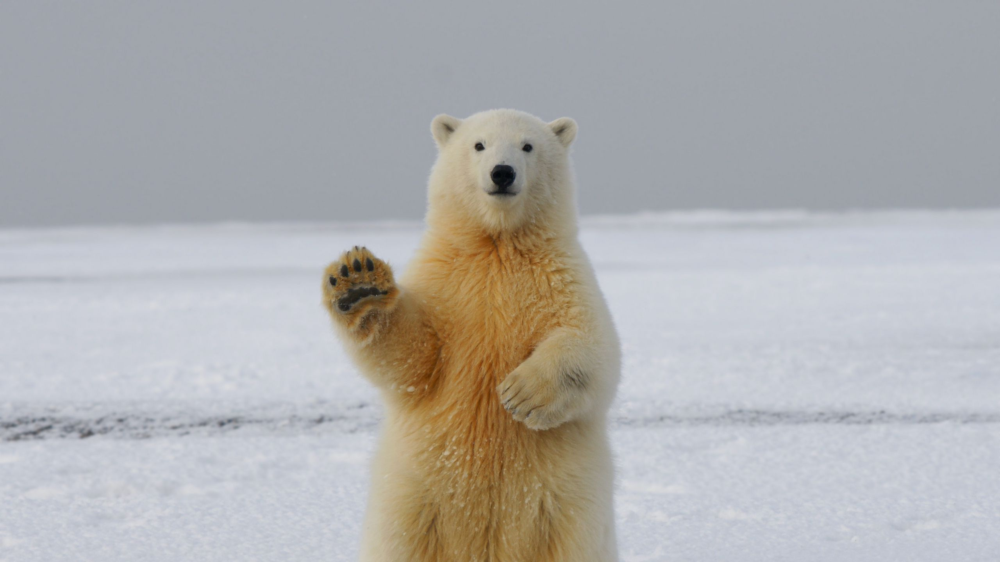
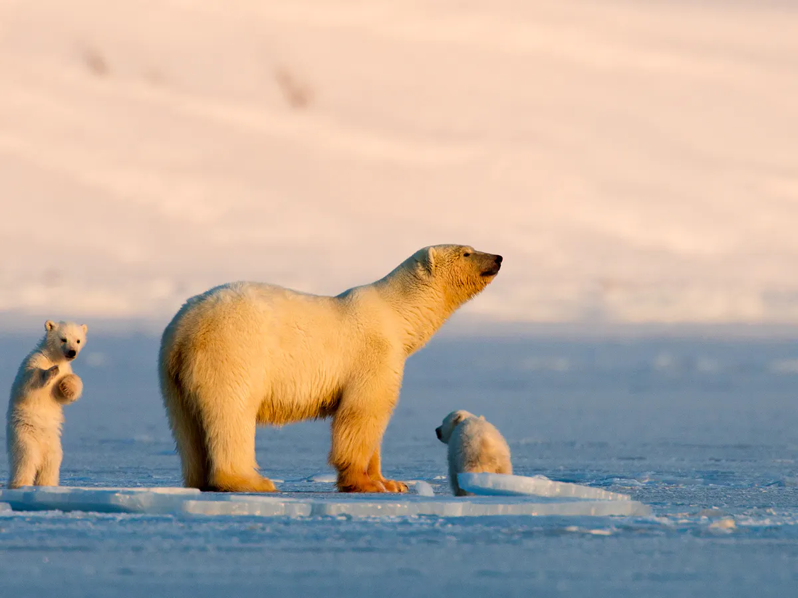
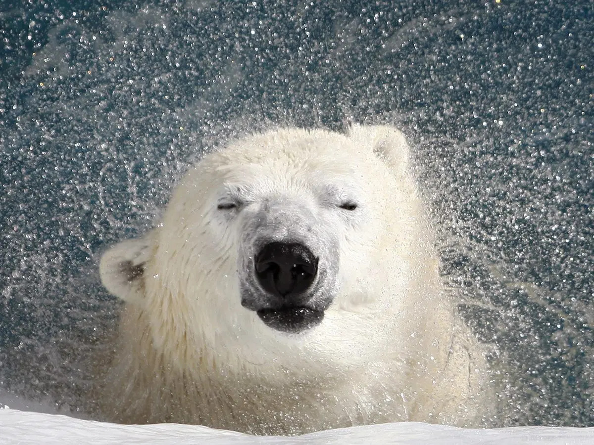

Description
Polar bears are the largest carnivorous land mammals on Earth. They are about seven to eight feet long, measured from the nose to the tip of their very short tail. Male polar bears are much larger than the females. A large male can weigh more than 1,700 pounds, while a large female is about half that size (up to 1,000 pounds). Bears can weigh about 50 percent more after a successful hunting season than they do at the start of the next; most of this additional weight is accumulated fat. A newborn polar bear weighs only about 1.5 pounds.
Many of the polar bear's physical adaptations help it maintain body heat and deal with its icy habitat. The bear's outer layer of fur is hollow and reflects light, giving the fur a white color that helps the bear remain camouflaged. The skin under the polar bear's fur is actually black; this black is evident only on the nose. Polar bears also have a thick layer of fat below the surface of the skin, which acts as insulation on the body to trap heat. This is especially important while swimming and during the frigid Arctic winter. The bear's large size reduces the amount of surface area that's exposed to the cold per unit of body mass (pounds of flesh), which generates heat.
The polar bear's footpads have a kind of “non-slip” surface, allowing them to get traction on slippery ice. Polar bears have strong legs and large, flattened feet with some webbing between their toes, which helps with swimming and walking on ice. The wide paws prevent sea ice from breaking by distributing the polar bear's weight as it walks. The webbed feet results in making polar bears, unlike other bear species, considered to be “marine mammals” along with seals, sea lions, walruses, whales, and dolphins. However, they are still bears. The polar bear evolved one to three million years ago from the brown bear, which still ekes out a marginal life along the northern shore of the Arctic oceans. Unlike the massive polar bear, which can grow huge on a diet of abundant seals, its ancestor in the Arctic is small, has very lower reproductive rates, and eagerly eats almost anything that exists in its environment.
Polar bears have evolved something else that is different from their ancestor: most polar bears don’t den, however all brown bears do. When grizzly bear food is covered in snow during the winter, this species must den because there is nothing to eat. In contrast, most polar bears have access to their food of choice (seals) all winter long, so there is no need for them to den. The exception to this is pregnant adult females. Pregnant female polar bears must den so that their tiny newborn cubs are born in a warm protected environment; dens can be 38 degrees Fahrenheit warmer than the outside temperature. The cubs would otherwise freeze to death in the frigid temperatures of the far north.
Range
Most polar bears occur north of the Arctic Circle to the North Pole. There are some populations south of the Arctic Circle in the Hudson Bay of Manitoba, Canada. Polar bears live in Alaska, Canada, Russia, Greenland, and some northern islands owned by Norway, such as Svalbard.
Polar bears depend on the sea ice, which forms above the open waters where their seal prey lives. They will spend time on land when sea ice is not available (and most pregnant polar bear females make their dens on shore near the coast). Polar bears are excellent swimmers, and they travel long distances between shore and the sea ice if necessary. However, if a storm kicks up during these increasingly long swims (caused by the warming ocean), they can drown. These long swims and storms are also often difficult for cubs. During periods of ice breakup, polar bears frequently swim between floating ice islands.
Diet
Unlike other bear species, polar bears are almost exclusively meat eaters (carnivorous). They mainly eat ringed seals, but may also eat bearded seals. Polar bears hunt seals by waiting for them to come to the surface of sea ice to breathe. When the seal nears the surface, the polar bear will bite or grab the seal and pull it onto land to feed. They also eat walruses and whale carcasses. Polar bears will search out bird eggs and other food sources, but none of these are abundant enough to sustain the large body mass and dense populations of polar bears.
Another vitally important food source in most areas are seal pups that are born and live in dens in the Arctic ice. The polar bear identifies these dens by smell and other markers and pounces though the roof of the den to capture the young seals. In Hudson Bay, the availability of seal pups in the spring is increasingly limited by earlier melting of ice. In the Arctic, polar bears are at the top of the food chain; they eat everything and nothing (except native hunters) eats them. Six species, including the polar bear and the giant panda, are included on the IUCN Red List as threatened or vulnerable.
Behavior
Polar bears tend to live solitary lives except when mating, when a female raising her cubs forms a family group, or when many bears are attracted to a food source like a beached whale. Young polar bears spending the summer ashore on the Hudson Bay coast will frequently play with each other, most commonly with their siblings. Polar bears near Churchill on the coast of Hudson Bay are even known to play with chained sled dogs without killing them, which they could easily do.